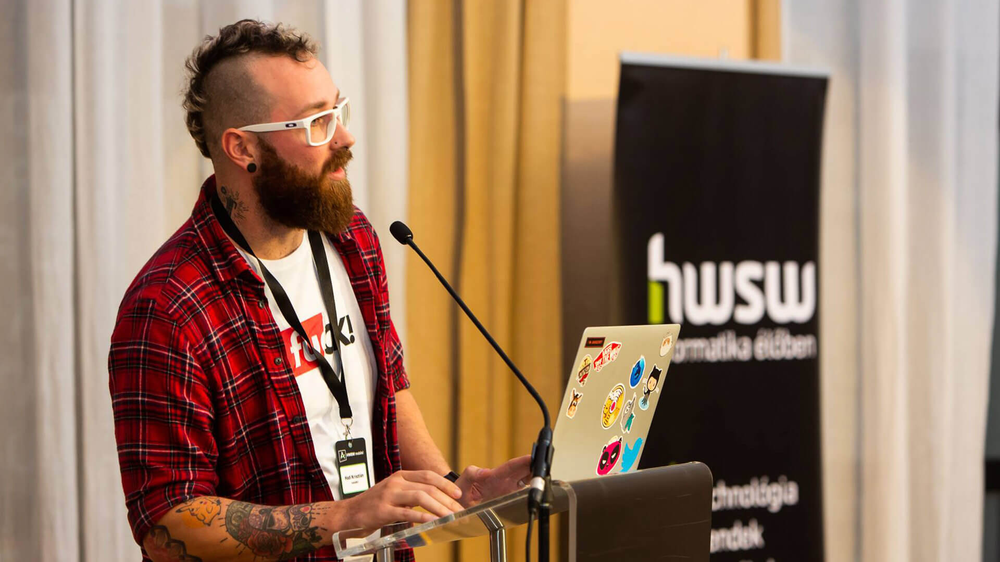

Hello there!
I'm Krisztián, the designer you need, not the one you want.

Photo of me giving a talk on the HWSW Conference, Budapest, 2018.I am a multidisciplinary designer and UI developer who is creating on the world wide web for more than two decades.
Started the craft with reverse engineering websites, learning the ins and outs of the early web with tools like Netscape Composer, MS Frontpage and so on. Just to put you on memory lane as well hahaha.
Touching ground in the advertisement, gaming, adult entertainment, educational and SAAS industries in diverse roles collecting not just good memories but wide spreading experience through project management to digital accessibility.
I like to consider myself a great teamplayer and result oriented professional, who doesn't bullshit but focuses on the cleanest and most efficient solutions delivered utilising all the available knowledge within the team and beyond.
Personally I don't believe in walled gardens, airtight separation between design and development. I believe in transparency, communication and collaboration. If a concept is faster to implement in code than spending countless hours in Figma (not even talking about the shortcomings of designs softwares compared to code) I'm more than happy to jump on the keyboard. Actually prefering to prorotype in the browser rather than in any other design tool.
I'm a fan of indie and open web, user friendly interfaces and clean, single purpose products.
What we can achieve together
Meanwhile my main area of expertise is digital product design, I can help you with fine tuning your strategy, development workflow, branding or auditing current product acessibility, UX flows and technical shortcomings.
Past projects I'm proud of
During my career I had the chance to work with some of the biggest brands in the planet together with small startups, helping them to improve their products, providing them with the best design solutions. Just to mention a few: Microsoft, LogmeIn, LastPass, Crytek, LiveJasmin (as Product designer), and Volvo, Absolut Vodka, Milka, Nivea (as Digital Art Director) and the list goes on and on.
I could put a huge fluffed up showcase here but I think every project is different and unique (and most of them protected by NDAs) and not necessaraly reflects my current skillset or knowledge, but if you're curious about my work, feel free to drop me a line, I'm always happy to share my experiences and what I've learned.
If you are into HR stuff, you can find my CV here, even print it out if you want.
What I'm good at
Well, this could be a nice SEO milking section with all the buzzwords, but I'm not going to do that. I'm not a robot, You are not a robot (I hope) and I have my own preferences, skills, and I'm not afraid to admit it.
Primarily using Figma these days, but I'm comfortable with any design software, end of the day they are all the same, not the tool that defines the designer.
For coding I'm using Cursor at the moment, but not emotionally attached to any of the IDEs out there. I always look for efficiency and productivity, not the latest hyped features.
Tech stack wise I'm most proficient with HTML, CSS and JavaScript and have fond memories of PHP. Although I'm not chasing the latest trends, I can pick up any other language if needed. Again, I think that not the tech will define the human behind the keyboard, everything is just a tool to achieve the goal and matter of comfort.
Personal life
Slow travelling the world with my wife Anikó and our two cats Gizi and Laci.
In the time being I like to take photos, take long walks on the beach and play "weird" electronic instruments or my handpan.
Want to work together or just have a word?
Drop a line to the hey@krisztian.wtf inbox.
Love letter for recruiters
Over the years I've met many really good recruiters, but some made me write this section here.
Please read it in case you want to contact me, this might sound a bit an "ahole" move but trust me, it will save lot if time for both of us:
- I work remotely. Few annual meetup is doable, but not interested in hybrid or full time office jobs, the commuting times are behind me.
- I'm not going to do "homework" for free just to prove I can execute basic orders properly sitting on my ass. Made plenty over the years. Although, workshops or contracted projects are welcome.
- No low ball offers after the 6th round. I would like to know the budget upfront.
Thank you!